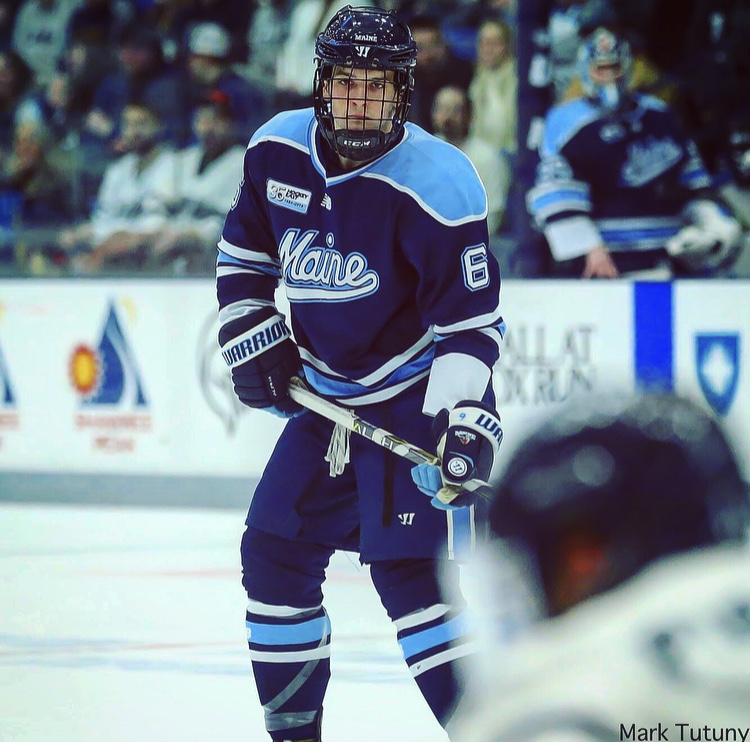

My name is Simon Butala and I am a freshman at the University of Maine. I am 20 years old, which is older than a normal freshman, but I will explain why that is the case. I am from a pretty big town in Pennsylvania where I live with my family. I live with my dad, mom, brother, dog, and two cats. I am a big family guy and love being around everybody. My aunt, uncle, cousins, and grandparents all live within 15 minutes of my house. We always get together when I am home because nowadays we dont get time together as often. The reason that is the case is because I go to school here at the University of Maine because when I was younger I accepted a scholarship to play hockey here. When I was younger my dad forced me to play hockey thinking that I would be good at it, although I hated it for the first couple months that I played. As I got older and better at it I started to love it more and more and now today it is the reason that I am where I am. I was lucky enough to have super supportive parents and grandparents who first, paid for me to play hockey which is not a cheap sport, but also took me all around the country as I went to different tournaments. They sacrificed a lot for me to be able to have the life that I do now and that is what motivates me to work as hard as I can to make it all worth it. I committed to Maine when I was 15 and a sophomore in high school. Following that year I left school to go play in a semi-professional league for kids 16-21 years old. I started in Sioux City, Iowa and throughout my 4 years in the league I ended up living and playing in 6 different cities including Cedar Rapids, Corpus Christi, Coulee, and Bloomington. Playing for 6 different teams and being enrolled in 4 different high schools. With all of that I learned how to do things on my own at a young age and matured very quickly. Leaving my family at such a young age was very hard especially when I only got to see them over the summer. Being so close to my family it still never gets easier when it is time to leave. The reason that I am 20 as a freshman is because the league that I played in allows hockey players to play while taking a gap year(s) before going to college. I took 2 years off of school before coming here due to injuries that I had been struck with while playing hockey. As crazy as that seems it is actually very normal for hockey players to do. The average age for a D1 freshman hockey player is 20. This is because of the abundance of leagues there are around the country that allow players to take those gap years. This helps because it gives you more time to mature and figure out what you want to do when you get to college. Hockey isnt all I do with my life though. When I am home my family goes on vacations to different places like the 1000 islands in Canada, and Ocean City, New Jersey. Over the summer my brother and I both love doing things together like working out/training for our sports development, playing basketball and going different places. When I am away at school we like to play video games together once our days are done. This is a fun and great way that I can keep in close touch with him because it is hard to be away from your younger brother during his years of growing up. So thats a little bit of variety about what my life consists, or has consisted of, and the reason I am where I am today. I feel very blessed to have gotten so lucky. Thats a little bit about me and I am looking forward to class.
